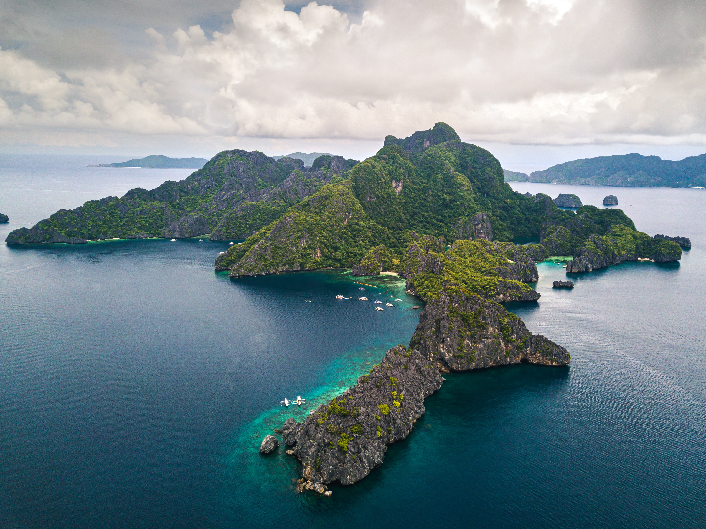

Taniti is a small, tropical island in the Pacific. While the island has an area of less than 500 square miles, the terrain is varied and includes both sandy and rocky beaches, a small but safe harbor, lush tropical rainforests, and a mountainous interior that includes a small, active volcano. Taniti has an indigenous population of about 20,000. Until a recent increase in tourism, most the Tanitian economy was dominated by fishing or agriculture.
Nestled in the heart of the Pacific Ocean, Taniti Island is a tropical paradise renowned for its breathtaking natural beauty, rich cultural heritage, and diverse range of activities. With an area of less than 500 square miles, this enchanting island offers a unique blend of pristine beaches, lush rainforests, and the majestic presence of Mount Taniwa, an active volcano.
Natural Wonders: Taniti Island is a haven for nature enthusiasts and adventure seekers. The island boasts white sandy beaches that frame crystal-clear waters, making it an ideal destination for sunbathing, swimming, and water sports like snorkeling and scuba diving. The dense tropical rainforests that cover the interior of the island are home to a myriad of flora and fauna, offering opportunities for hiking, zip-lining, and wildlife observation.
Volcanic Majesty:
Mount Taniwa, the island's active volcano, adds an element of drama to the landscape. Visitors can embark on guided hikes to witness the awe-inspiring beauty of volcanic craters and panoramic views from its summit. The volcano is closely monitored to ensure the safety of both residents and tourists.
Cultural Riches: Taniti Island is inhabited by an indigenous population of approximately 20,000, known for their warm hospitality and preservation of traditional customs. The island's culture is celebrated through local festivals, music, dance, and art. Visitors have the opportunity to immerse themselves in the island's cultural heritage through interactions with the friendly local community.
Currency and Amenities:
Taniti Island uses the U.S. dollar as its currency, and most businesses accept major credit cards. Visitors will find a range of accommodations, from budget-friendly hostels to luxurious beachfront resorts. Restaurants offer a variety of cuisines, from local seafood and rice dishes to international fare.
Safety and Enjoyment:
Violent crime is extremely rare on Taniti Island, but visitors should remain cautious of petty crimes like pickpocketing, especially in tourist-heavy areas. Additionally, some businesses and attractions may close on national holidays, so planning ahead is advisable.
Taniti Island welcomes travelers with open arms, inviting them to experience its natural wonders, vibrant culture, and warm hospitality. Whether you're seeking adventure, relaxation, or a blend of both, Taniti Island offers a memorable escape into paradise.
Packages:
Romantic Getaway (5 Days)
Days 1-2: Honeymoon Bliss
Check into a luxurious beachfront resort or a private beach house.
Spend your days unwinding on the beach and enjoying couples activities.
Day 3: Rainforest Escape
Go on a romantic rainforest hike.
Enjoy a secluded picnic in the midst of nature.
Day 4: Sunset Helicopter Ride
Take a romantic helicopter ride at sunset for breathtaking views.
Enjoy a candlelit dinner afterward.
Day 5: Departure
Make the most of your last moments on the island with a morning beach walk and breakfast by the sea before departing
Relaxation and Beach Bliss (7Days)
Day 1: Arrival in Taniti City
Check into your chosen accommodation.
Relax and explore Taniti City's local cuisine and nightlife.
Day 2: Beach Day at Yellow Leaf Bay
Spend the day lounging on the pristine beaches of Yellow Leaf Bay.
Enjoy water sports like snorkeling and paddleboarding.
Day 3: Rainforest Adventure
Take a guided tour of the lush tropical rainforests.
Go zip-lining or hiking through the dense vegetation.
Day 4: Merriton Landing Exploration
Visit Merriton Landing for its entertainment options, including pubs, microbreweries, and art galleries.
Try local delicacies at the restaurants.
Day 5: Island Tour
Explore the island's scenic spots with a guided tour.
Visit historical sites, local markets, and hidden gems.
Day 6: Water Activities
Charter a fishing tour or enjoy a boat ride around the island.
Snorkel or scuba dive to explore underwater wonders.
Day 7: Departure
Take a leisurely stroll on the beach or relax by the pool before your departure.
Business and Relaxation (5 Days)
Day 1: Arrival in Taniti City
Check into your chosen business-friendly accommodation.
Attend any necessary meetings or conferences in Taniti City.
Day 2: Work and Sightseeing
Continue with business meetings or work commitments.
In the evening, explore Taniti City's local cuisine.
Day 3: Rainforest Retreat
Dedicate your day to work in the morning.
In the afternoon, take a break and enjoy a guided tour of the lush tropical rainforests.
Day 4: Merriton Landing and Entertainment
Complete your work or business tasks.
In the evening, visit Merriton Landing for entertainment options like pubs, microbreweries, and live music.
Day 5: Departure
Wrap up any remaining work or meetings.
Enjoy a few hours of relaxation on the beach or by the pool before your departure.
Want to make changes to a package or create a custom vacation experience?
Please contact us using the contact information provided below to make changes. Pricing can also be requested.
Accomodations
Lodging:
Taniti has a wide variety of lodging that ranges from an inexpensive hostel to one large, four-star resort. There are many small, family-owned hotels and a growing number of bed and breakfasts. All types of lodging are strictly regulated and regularly inspected by the Tanitian government.
Grocery Stores:
Taniti has two supermarkets, two smaller grocery stores, and one convenience store that is open 24 hours a day.
Restaurants:
Taniti currently has 10 restaurants: five serve mostly local fish and rice, three serve American-style meals, and two serve Pan-Asian cuisine.
Activities
Entertainment:
Most people visit Taniti to enjoy the beaches, explore the rainforest, and to visit the volcano. However, there are other things to do, including visiting a local history museum, going on chartered fishing tours, snorkeling, zip-lining in the rainforest, visiting several pubs, including a microbrewery, dancing at a new dance club, seeing a movie, taking helicopter rides, playing at an arcade, visiting art galleries, and bowling. Also, a nine-hole golf course should be operational by next year. Many of these activities are located in Merriton Landing, which is a rapidly developing area on the north side of Yellow Leaf Bay.
Sightseeing:
Most tourists spend most of their time in Taniti City, which boasts native architecture and nearby white, sandy beaches that encircle Yellow Leaf Bay. Other popular activities include boat or bus tours of the island, hikes in the rainforest, or visits to Taniti’s active volcano.
Transportation
Air & Water Transportation:
Almost all visitors arrive to Taniti by air, though some arrive on a small cruise ship that docks in Yellow Leaf Bay for one night per week. Taniti is served by a small airport that can accommodate small jets and propeller planes. Taniti is in the process of expanding the airport so larger jets will be able to land on the island within the next few years.
Ground Transportation:
Public buses serve Taniti City and run from 5 a.m. to 11 p.m. every day. Private buses serve the rest of the island. Taxis are available in Taniti City, and rental cars can be rented from a local rental agency near the airport. Bikes and helmets are available to rent from several vendors (helmets are required by law). Taniti City is fairly flat and very walkable. Many tourists stay in the area surrounding Merriton Landing: this area is easy to explore on foot.
Explore Taniti Island in Pictures
Discover the stunning beauty of Taniti Island through a collection of captivating images.

Contact Information
If you have any questions or need assistance, please feel free to reach out to us using the contact details below: